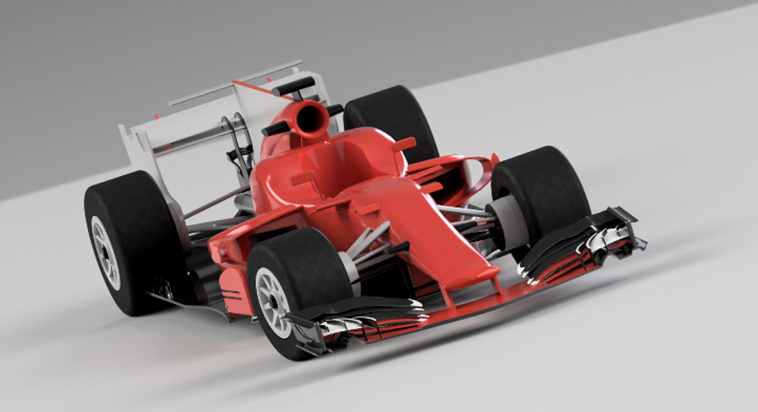
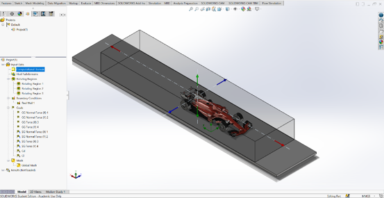
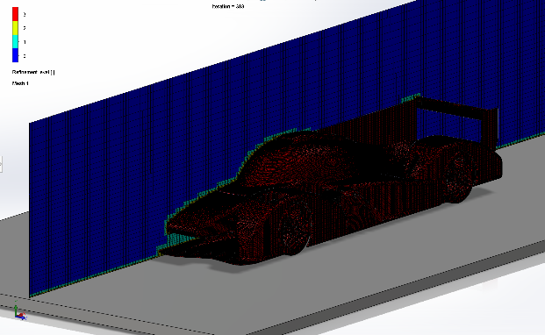
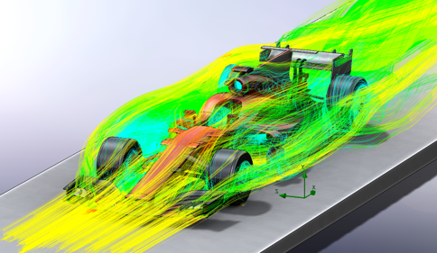
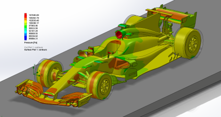

Featured projectDiploma thesis · CAD development & external-flow CFD
Formula 1-Inspired Race Car
Formula 1 Car — CFD Aerodynamic Analysis3D vehicle development and external-flow CFD analysis investigating velocity, surface pressure, drag and downforce.
CAD DevelopmentVehicle bodywork and aerodynamic-component geometry created in Autodesk Fusion 360.
A 3D Formula 1-inspired vehicle model was developed as the geometric foundation for the aerodynamic study. The model includes the principal bodywork and aerodynamic components used in the simulation.
- 3D vehicle-geometry development
- Bodywork and aerodynamic components
- Simulation-ready CAD preparation

CFD Setup & MeshExternal-flow domain, boundary configuration and mesh visualisation for the vehicle model.

Use this area later to add your actual boundary conditions, mesh strategy, turbulence model, convergence approach and any validation information.

Flow Analysis & ResultsVelocity, pressure and aerodynamic-force assessment of the Formula 1-inspired vehicle.

The analysis examines airflow behaviour around the vehicle and links geometry to velocity distribution, surface pressure, drag and downforce generation. Replace this with your specific findings once you have them written.